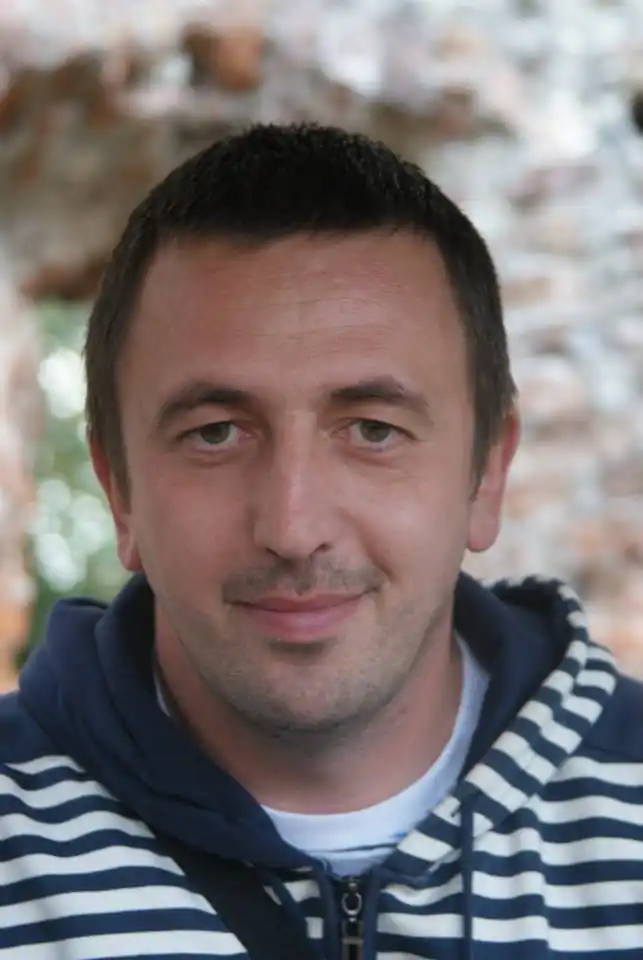

Народився 24 лютого 1981 року в селі Ралівка, Самбірського району.
Закінчив бухгалтерське відділення Вишнянського коледжу Львівського національного аграрного університету. Працює сільським бухгалтером. За мотивами повісті Ярослава Яроша "Лицар з Кульчиць" ним був написаний кіносценарій до фільму про Юрія Кульчицького. Крім того, у цьому фільмі письменник дебютував як актор: знявся у ролі турецького аги.
Твори: Будить хиренну волю (2010), Лицар з Кульчиць (2010), Із сьомого дня (2011), Кровна мста (2012), Судний день (2014), Сповідь з того світу (2015), Самійло (2017).